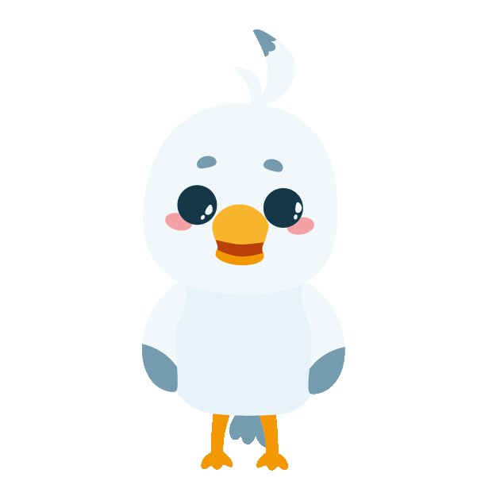
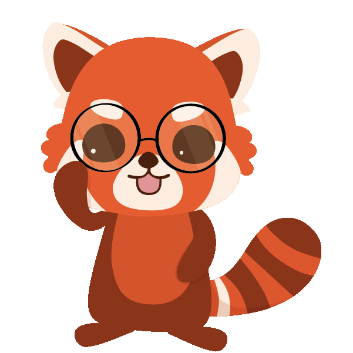
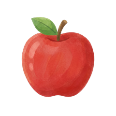
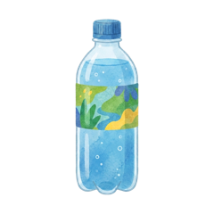
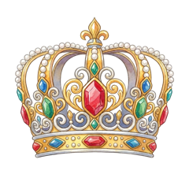
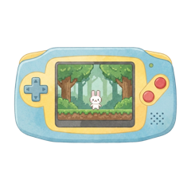
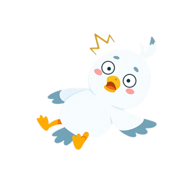
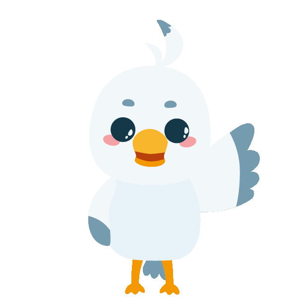
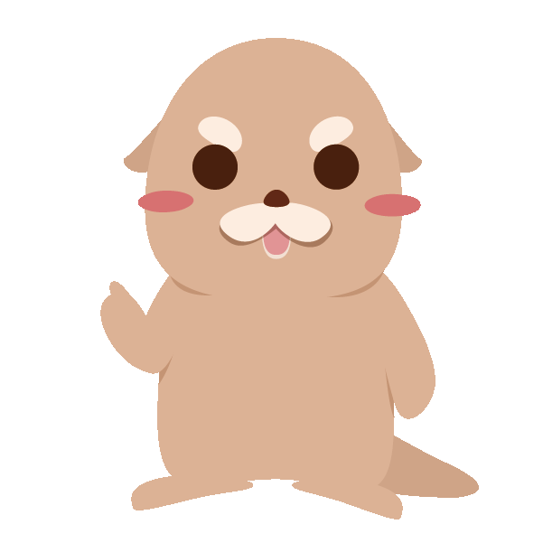
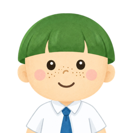

橘蘋財商素養課程
金錢觀不是用聽的，是用「經歷」學會的。
每週一堂，老師帶著孩子上課、想議題；課後的世界 24 小時開放——賺薪水、記帳、儲蓄、投資，自己決定怎麼用錢。想亂花錢？可以。突然生病卻沒買保險？自己付。所有後果都發生在遊戲裡——犯錯的成本是零，學到的教訓是真的。
50 分鐘試聽：實際體驗雙師上課與平台操作。留下資料，課程顧問將與您聯繫安排。
橘子蘋果程式學苑出品｜深耕兒童與青少年程式教育 14 年・服務超過 10 萬名學員
「橘蘋財商素養課程」是橘子蘋果程式學苑為 3-7 年級孩子設計的財商課程，搭配專屬的「財商學習平台」練習。每週一堂 90 分鐘：前 50 分鐘雙師模式——課程影片講觀念、真人老師看著每個孩子的操作；後 40 分鐘「財商議題課」，老師帶著討論當週議題。課後平台開放，孩子在理財經營遊戲中領日薪、記帳、儲蓄生息、模擬投資、用保險面對突發風險；家長每週收到學習週報。課程共 45 堂。課程由深耕台灣兒童與青少年程式教育 14 年的橘子蘋果推出。平台內所有金幣皆為模擬貨幣，非真實金錢，也不涉及任何真實金融交易或投資建議。
01・為什麼需要財商
關於錢，孩子遇到的三個困境
零用錢有去無回
錢一到手就花完。問他花去哪了，他自己也答不出來。
學校不教這件事
數學考一百分，不代表懂得管理自己的錢。金錢教育在課表上，一直是空白的。
說教，孩子聽不進
你說「要存錢」，他聽到的是「不能買」。道理講一百次，不如讓他自己經歷一次。
所以我們不講道理——我們給孩子一個「會發生後果」的世界。
02・一堂課怎麼上
每週一堂 90 分鐘：老師帶著上，議題一起想
課程共 45 堂、每週一堂。前 50 分鐘跟著老師上課實作，後 40 分鐘是整堂課最值錢的部分——財商議題課。
雙師上課・平台實作
課程影片講觀念，真人老師全程看得到每個孩子的畫面——發現卡住，老師會主動開啟通話；孩子有問題，也能舉手發問、依序輔導。
進度確認
最後十分鐘，老師逐一記錄每個孩子今天走到哪、下一堂從哪裡接著走。
每週財商議題
切換到線上會議室，老師帶著談當週的財商議題，也邀請孩子分享自己的觀察與想法。金錢的「判斷力」，是在對話裡長出來的。
— 財商議題課在孩子的課表上，有個更好懂的名字：「動腦時間」。
03・平台怎麼運作
課後，一場會發生後果的理財經營遊戲
課堂上老師帶著學，課後這個世界 24 小時開放。孩子在平台裡過一個縮小版的金錢人生：有收入、有選擇、有意外，也有保障。
上課，賺經驗
觀看課程、回答題目，是累積經驗值的唯一途徑。
升級，加薪
經驗值滿了就升級——從「打工新手」一路往上，等級越高、日薪越多。「懂得越多、賺得越多」是這個世界的底層規則。
簽到，領日薪
每天簽到領取當天薪水，自然養成每天回來學習的習慣。
一天只能簽一次，忘記按就沒有了。
決定錢的去向
花掉？存進銀行生利息？拿去投資？還是買一份保險？每一筆都自己決定。
命運卡：隨機發生的人生
簽到時抽一張命運卡——可能中獎、可能沒事，也可能「重感冒住院」，要付一筆醫藥費。
保險，在意外之前
有買對應的保險，意外來了有理賠；沒買，就自己付。「風險」兩個字，從此不用解釋。
同一張命運卡，兩種結果
命運一抽
「重感冒發燒住院」
-3,000
沒買保險的人：醫藥費自己付。
保險理賠
有「醫療險」的人享有保障
+3,000
先花小錢買保障，這一刻它替你扛。
— 平台內實際事件與理賠設定（皆為模擬金幣）
而且每一筆錢都有紀錄。平台內建完整的收支明細，每筆錢的來龍去脈都查得到——記帳不是回家作業，是遊戲的一部分。
04・課程內容
45 堂課，把觀念拆成一關一關玩過去
課程共 45 堂，依序解鎖。每一堂再拆成數個關卡，孩子沿著課程地圖一站一站往前走——光是第 1 堂「支出與公益」就有 18 關。
- ✓小故事好想要買一台新筆電
- ✓小知識這是需要還是想要呢？
- ✓小測驗是需要還是想要呢？
- ✓小遊戲波比的白日夢泡泡
- 5小故事我的錢都到哪去了？
- 6小知識為什麼要記帳呢？
- ⋯
- 15小議題小心！拿鐵因子
課程地圖示意，關卡皆為平台實際內容（節選）。18 關是第 1 堂的關卡數，各堂不盡相同。跟著地圖走，一關一關把觀念收進口袋。
小故事
跟著故事主角波比，遇到每個孩子都熟悉的金錢時刻——「露比，我的零用錢又用光了！」
小知識
吉祥物叩叮親自出鏡：「今天我們要來聊聊『需要』和『想要』這兩個很重要的概念喔！」
小測驗
看完馬上檢核——「下列哪一個不是日常生活中『需要』的物品呢？」
小遊戲
在「波比的白日夢泡泡」裡戳破想要、留下需要——觀念用手玩過一遍，才記得住。


「露比，我的零用錢又用光了！」
「或許你會發現你每次都多買了幾包零食，錢就這樣不見了！」





小遊戲・波比的白日夢泡泡
戳破「想要」、讓「需要」安全升空——理智積分歸零就失敗。
— 以上畫面以平台實際課程素材重現：角色、道具、場景、對白皆為課程原件

波比｜故事主角
會衝動、會想買「開機會發光」的筆電——跟你家孩子一樣。金錢的難題，由牠先替孩子踩一次。
露比｜故事裡的夥伴
總在旁邊一句話點破盲點——「你要不要試著記帳看看？」

叩叮｜知識講師
橘子蘋果的吉祥物海獺，小知識影片親自出鏡，把觀念講到孩子聽得懂。
開場的前三堂主題
- 第 1 堂支出與公益
- 第 2 堂古代貨幣
- 第 3 堂現代貨幣與支付工具
— 以上皆為平台內實際課程與關卡名稱。從「需要與想要」一路講到「拿鐵因子」，用孩子的語言，教真正的理財概念。
05・課堂之外
一個完整的經濟世界
學到的每個觀念，馬上有地方用。
投資理財模擬環境
超過 1,300 檔擬真台股與 ETF 行情、市場新聞、損益追蹤。介面刻意做成正式看盤軟體的樣子——因為這不是玩具，是孩子未來真的會用到的東西。
畫面中的代號與漲跌皆為教學用的模擬資料，不是即時報價。平台不連結任何真實金融帳戶，孩子不會也無法買賣真實股票；課程不推薦任何個股，亦不提供投資建議。
銀行儲蓄
把錢存進銀行，每兩週結算一次利息。「複利」不用背公式——看著存款自己長大，就懂了。
每兩週結算一次，利息直接滾入儲蓄總額——放著不動，它自己會長。
連平台都誠實標了一句：利息不滿 1 金幣時不發放。
保險
醫療險、意外險、手機險、寵物險……9 種保險商品。先花一小筆錢換一份保障，值不值得？讓孩子自己算。
9 種商品與理賠金額皆為平台實際設定（模擬金幣）
造型商城
賺來的金幣有地方花——幫角色治裝，先試穿再決定。但越想要的越貴，還得先升到那個等級：想穿太空裝，得先存到 1,800 金幣、也得先上到 Lv.4。
造型單品 100–1,800 金幣Lv.2 起逐步解鎖
分類頁籤為平台商城節選

排行榜
比的是「這期進步多少」，不是誰的錢多。晚加入的孩子，一樣有機會站上頒獎台。
每期重新起跑
06・家長看得到
孩子在玩，
你看得到他學了什麼
- 每週整理一份，記錄孩子上一週的學習與理財狀況
- 雙軌記錄：上課進度（完成單元、活躍天數、升級進度）＋理財行為（資產配置、收支去向、投資／儲蓄／保險動作）
- 附「可以和孩子一起聊聊」建議——直接給你開啟餐桌對話的切入點
07・適合誰
為這樣的孩子與家庭設計
3-7 年級
動畫故事、語音講解、遊戲關卡三管齊下，這個年齡段的孩子看得懂、玩得動、能獨立完成。
每週一堂，天天都能練
每週 90 分鐘由老師帶課；課後平台隨時開放，每日任務和日薪讓他自己想回來。
不限地區
線上上課，全台各縣市都能參加，家裡就是教室。
08・常見問題
家長最常問的問題
這麼小就讓孩子接觸股票投資，會不會太早？
上課是什麼形式？老師會顧到我的孩子嗎？
免費試聽會體驗到什麼？
需要準備什麼設備？
適合幾年級的孩子？
孩子沒學過程式，可以直接上財商課嗎？
費用怎麼算？
孩子已經在橘子蘋果上課了，還能上財商嗎？會不會衝堂？
橘子蘋果不是教程式的嗎？為什麼做財商？
孩子的第一堂金錢課，
讓它在遊戲裡發生
50 分鐘免費試聽：和正式課一樣的雙師模式，孩子實際上課、實際操作平台。
您留下的資料僅用於本次課程諮詢聯繫，橘子蘋果不會提供給第三方。